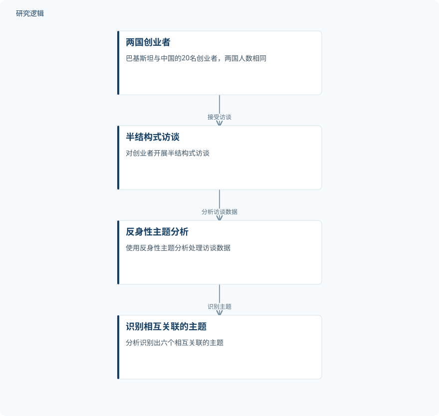

摘要解读
人工智能与金融科技创业生态系统：巴基斯坦和中国的比较研究
The AI-FinTech Entrepreneurial Ecosystem: Exploring How Intelligent Financial Technologies and Algorithmic Digital Visibility Transform Opportunity Recognition and Venture Growth. A Comparative Study of Pakistan and China
解读更新 2026-11-22 14:10 · 依据公开摘要整理，未核验全文细节
智能金融技术与平台算法如何共同影响创业者发现机会和推动企业成长？这项巴基斯坦与中国的比较研究，从创业生态系统视角提供了一种理解路径。
文章目录
创业机会不只取决于金融技术
人工智能与金融科技正日益融入数字平台。创业者通过这些平台发现机会、获取融资、接触客户并扩大企业规模，因此，理解创业过程也需要同时关注金融技术和平台中的算法可见性。
研究关注智能金融技术与算法数字可见性如何塑造机会识别和企业成长，并尝试将创业警觉性、动态能力、数字金融与算法可见性联系起来。
以两国创业者访谈开展质性比较
研究采用质性比较方法，对巴基斯坦和中国的20名创业者进行半结构式访谈，两国受访者人数相同。研究者随后使用反身性主题分析处理访谈数据。
这一设计围绕两国创业生态系统展开比较，摘要报告了分析所识别的主题，但没有展开介绍访谈问题、主题形成过程或具体案例。
依据摘要整理的访谈与分析过程


这是依据摘要整理的研究过程示意，并非论文原图；仅展示摘要明确报告的访谈与分析关系。
下载 SVG图示关系说明
实线表示相邻阶段的信息流，虚线表示跨阶段联系或反馈。
两国创业者 → 半结构式访谈：接受访谈；半结构式访谈 → 反身性主题分析：分析访谈数据；反身性主题分析 → 识别相互关联的主题：识别主题
六个相互关联的生态系统主题
分析识别出六个相互关联的主题：AI-FinTech作为机会感知基础设施；算法可见性作为市场准入机制；智能金融作为资源编排能力；平台不透明性与依赖；巴基斯坦与中国之间的生态系统不对称；以及作为边界条件的人类判断、信任和治理。
比较结果表明，当创业者能够将数据转化为行动，且数字平台提供获得可见性、合法性和客户的稳定途径时，AI赋能的金融智能能够最有效地创造价值。
这一结果将金融智能与平台可见性放在同一生态系统中理解，也提醒读者留意平台依赖以及人类判断、信任和治理所构成的边界条件。
摘要尚未展开的样本与验证范围
摘要给出了受访人数及两国人数均分的信息，但未说明受访者的行业、企业阶段、招募方式和其他背景，因而无法据此判断样本覆盖范围。
摘要提到两国生态系统存在不对称，却未详细说明差异的具体表现和比较依据；也未交代结论在其他地区、平台或人群中的验证范围。这些信息需要进一步查阅论文，不能据此认定研究没有开展相关工作。
阅读启发：追问数据如何转化为行动
阅读启发：可进一步关注论文如何解释创业者从金融数据走向行动，以及平台可见性、信任与人类判断在其中各自扮演什么角色。
对关注AI智能运维的读者，这项创业生态研究并非运维效果证据；可以将其作为跨领域阅读线索，留意技术价值与平台、使用者及治理条件之间的关系。
以上为本站阅读启发与建议，不是论文已验证的结论。